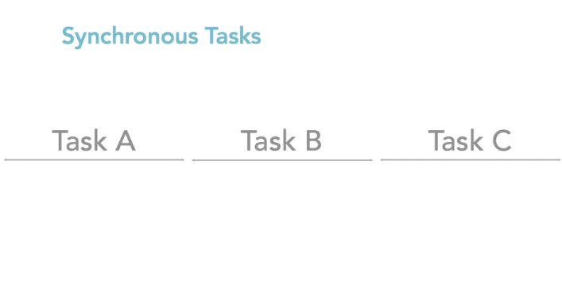

Node JS
Serverside JavaScript framework
Outline
- What is NodeJS
- Node
- Sync / Async
- Module
- fileSystem
- http - Webserver
- Expess - Node JS frontend framework
What is NodeJS
Node is an open-source cross platform runtime environment for server-side and networking applications. It is built on top of Chrome's JavaScript runtime, the V8 engine. And so, applications for Node are written in JavaScript.
Node.js uses an event-driven, non-blocking I/O model that makes it lightweight and efficient.
Synchronous
When using the synchronous form any exceptions are immediately thrown. Exceptions may be handled using try/catch, or they may be allowed to bubble up.
fs = require('fs');
data = fs.readdirSync('c:/');
console.log('data:', data);
console.log("this comes after");
Asynchronous

The asynchronous form always takes a completion callback as its last argument. The arguments passed to the completion callback depend on the method, but the first argument is always reserved for an exception. If the operation was completed successfully, then the first argument will be null or undefined.
fs = require('fs');
function phoneNumber(err, data) {
console.log('data:', data);
}
fs.readdir('c:/', phoneNumber);
console.log("this comes after");
Module
Create and owning Module
File System Library
Reading files
File System Library
Writing files
HTTP Module
Node.js has a built-in module called HTTP, which allows Node.js to transfer data over the Hyper Text Transfer Protocol (HTTP).
HTTP Module as webserver
The HTTP module can create an HTTP server that listens to server ports and gives a response back to the client.
Themes
reveal.js comes with a few themes built in:
Black (default) -
White -
League -
Sky -
Beige -
Simple
Serif -
Blood -
Night -
Moon -
Solarized